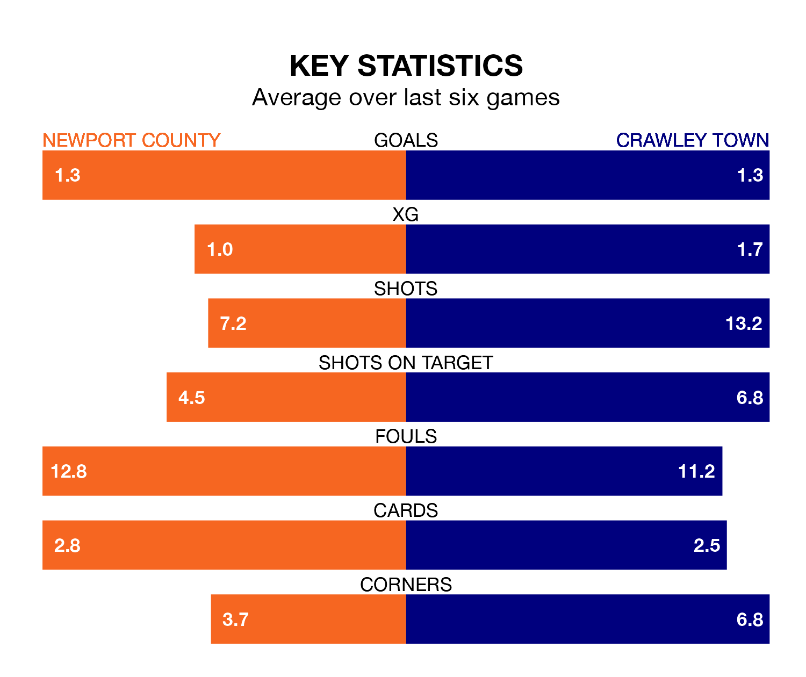

Crawley Town travel to Newport County on Monday in EFL League Two.
The visitors come into the game on the back of a defeat in their last match, having lost to Doncaster Rovers 2-0 at home.
The Exiles also lost their last match, 2-1 against Colchester United, with their goal scored by Offrande Zanzala.
In the last 10 years, Newport and Crawley have played each other on 16 occasions. Newport won four of them, Crawley seven, and they drew five times.
On average, the Exiles scored 1.1 goals and the Red Devils 1.7 in those matches.
Their last meeting was on September 9, when Crawley won 4-1 at home.
In Will Evans, Newport have one of the league's sharpest shooters so far this season. He has notched 20 goals in 40 appearances, to sit third in the scoring charts.
His goal rate of one every 167 minutes is quicker than that of Danilo Orsi-Dadamo, Crawley's top scorer with a goal every 209 minutes, and a total of 16 goals in 38 games.
With 59 goals in 40 games so far this season, County are scoring at the league's average rate with 1.5 goals per game. But they are conceding at an average rate too, letting in 61 goals at a rate of 1.5 per game.
Town are also average scorers, with 1.5 goals per game. They have conceded 1.4 goals per game.
The Exiles are in disappointing form in EFL League Two, with two wins and four losses from their last six games.
With three wins and a draw over that period, the Red Devils' form is better – they have taken 10 points from 18, compared to the hosts' six.
The away team are ninth in the table after 39 games, of which they have won 18 and drawn five, earning 59 points.
Newport are three places behind Crawley in 12th, with 16 wins and seven draws putting them on 55 points.
Monday's match will be refereed by Martin Woods, who has taken charge of 11 EFL League Two games so far this season, issuing one red card and booking 40 players. He has awarded three penalties.
The last Newport game Woods refereed was a 3-0 away loss to Accrington Stanley on August 5. His last Crawley match was their 2-0 loss away at Doncaster Rovers on October 3.
Updated: 10:31 (UTC), 31/03/24